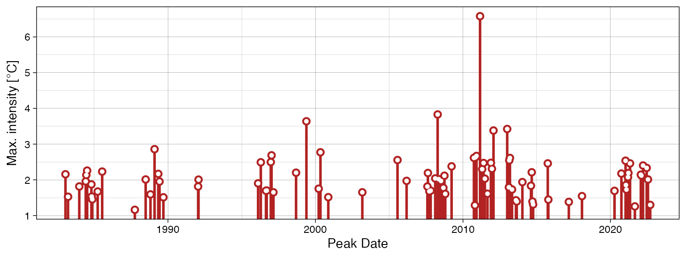

Detection and Visualisation
AJ Smit and Robert W Schlegel
2018-09-27
Source:vignettes/detection_and_visualisation.Rmd
detection_and_visualisation.RmdOverview
The detect_event() function is the package’s core function. Here is the detect_event() function applied to the Western Australian test data, which are also discussed by Hobday et al. (2016):
# Load libraries
library(heatwaveR)
library(dplyr)
# Detect the events in a time series
ts <- ts2clm(sst_WA, climatologyPeriod = c("1983-01-01", "2012-12-31"))
mhw <- detect_event(ts)
# View just a few metrics
mhw$event %>%
dplyr::ungroup() %>%
dplyr::select(event_no, duration, date_start, date_peak, intensity_mean, intensity_max, intensity_cumulative) %>%
dplyr::arrange(-intensity_cumulative) %>%
head(5)## # A tibble: 5 x 7
## event_no duration date_start date_peak intensity_mean intensity_max
## <int> <int> <date> <date> <dbl> <dbl>
## 1 22 95 1999-05-13 1999-05-22 2.50 3.60
## 2 42 60 2011-02-06 2011-02-28 3.21 6.51
## 3 49 47 2012-01-11 2012-01-27 2.23 3.30
## 4 50 46 2012-03-01 2012-04-10 1.99 2.96
## 5 41 40 2010-12-24 2011-01-28 2.16 3.27
## # ... with 1 more variable: intensity_cumulative <dbl>The corresponding event_line() and lolli_plot(), which represent the massive Western Australian heatwave of 2011, look like this:
event_line(mhw, spread = 100, metric = "intensity_cumulative", start_date = "2010-11-01", end_date = "2011-06-30")
lolli_plot(mhw)
The event_line() and lolli_plot() functions were designed to work directly on one of the dataframes in the list returned by detect_event(). If more control over the figures is required, it may be useful to create them in ggplot2 by stacking geoms. We specifically created two new ggplot2 geoms to reproduce the functionality of event_line() and lolli_plot(). These functions are more general in their functionality and can be used outside of the heatwaveR package, too. To apply them to MHWs and MCSs first requires that we access the clim or event dataframes within the list that is produced by detect_event(). Here is how:
# select the region of the time series of interest
mhw2 <- mhw$clim %>%
slice(10580:10690)
ggplot(mhw2, aes(x = t, y = temp, y2 = thresh)) +
geom_flame() +
geom_text(aes(x = as.Date("2011-02-26"), y = 25.8, label = "the Destroyer\nof Kelps"))
ggplot(mhw$event, aes(x = date_start, y = intensity_max)) +
geom_lolli(colour = "salmon", colour_n = "red", n = 3) +
geom_text(colour = "black", aes(x = as.Date("2006-08-01"), y = 5,
label = "The marine heatwaves\nTend to be left skewed in a\nGiven time series"))
The default output of these function may not be to your liking. If so, not to worry. As ggplot2 geoms, they are highly malleable. For example, if we were to choose to reproduce the format of the MHWs as seen in Hobday et al. (2016), the code would look something like this:
# It is necessary to give geom_flame() at least one row on either side of the event in order to calculate the polygon corners smoothly
mhw_top <- mhw2 %>%
slice(49:110)
ggplot(data = mhw2, aes(x = t)) +
geom_flame(aes(y = temp, y2 = thresh, fill = "all"), show.legend = T) +
geom_flame(data = mhw_top, aes(y = temp, y2 = thresh, fill = "top"), show.legend = T) +
geom_line(aes(y = temp, colour = "temp")) +
geom_line(aes(y = thresh, colour = "thresh"), size = 1.0) +
geom_line(aes(y = seas, colour = "seas"), size = 1.2) +
scale_colour_manual(name = "Line Colour",
values = c("temp" = "black", "thresh" = "forestgreen", "seas" = "grey80")) +
scale_fill_manual(name = "Event Colour", values = c("all" = "salmon", "top" = "red")) +
scale_x_date(date_labels = "%b %Y") +
guides(colour = guide_legend(override.aes = list(fill = NA))) +
labs(y = expression(paste("Temperature [", degree, "C]")), x = NULL)
Should we not wish to highlight any events with geom_lolli(), it would look like this:
ggplot(mhw$event, aes(x = date_start, y = intensity_cumulative)) +
geom_lolli(colour = "salmon")
The calculation and visualisation of cold-spells is also accommodated within this package. Here is a cold spell detected in the OISST data for Western Australia:
# First calculate the cold-spells
ts_10th <- ts2clm(sst_WA, climatologyPeriod = c("1983-01-01", "2012-12-31"), pctile = 10)
mcs <- detect_event(ts_10th, coldSpells = TRUE)
# Then look at the top few events
mcs$event %>%
dplyr::ungroup() %>%
dplyr::select(event_no, duration, date_start,
date_peak, intensity_mean, intensity_max, intensity_cumulative) %>%
dplyr::arrange(intensity_cumulative) %>%
head(5)## # A tibble: 5 x 7
## event_no duration date_start date_peak intensity_mean intensity_max
## <int> <int> <date> <date> <dbl> <dbl>
## 1 16 76 1990-04-13 1990-05-11 -2.54 -3.22
## 2 54 58 2003-12-19 2004-01-23 -1.80 -2.66
## 3 71 52 2014-04-14 2014-05-05 -1.82 -2.57
## 4 8 38 1986-06-24 1986-07-17 -2.01 -2.95
## 5 51 32 2003-09-08 2003-09-16 -1.56 -2.12
## # ... with 1 more variable: intensity_cumulative <dbl>The plots showing the cold-spells look like this:
event_line(mcs, spread = 200, metric = "intensity_cumulative",
start_date = "1990-01-01", end_date = "1990-08-30")
lolli_plot(mcs)
Cold spell figures may be created as geoms in ggplot2, too:
mcs2 <- mcs$clim %>%
slice(2990:3190)
# # Note that the plot centres on the polygons, so it may be necessary to manually zoom out a bit
ggplot(data = mcs2, aes(x = t)) +
geom_flame(aes(y = thresh, y2 = temp), fill = "steelblue3", show.legend = F) +
geom_line(aes(y = temp, colour = "temp")) +
geom_line(aes(y = thresh, colour = "thresh"), size = 1.0) +
geom_line(aes(y = seas, colour = "seas"), size = 1.2) +
scale_colour_manual(name = "Line Colour",
values = c("temp" = "black", "thresh" = "forestgreen", "seas" = "grey80")) +
scale_y_continuous(limits = c(18, 23.5)) +
scale_x_date(date_labels = "%b %Y") +
labs(y = expression(paste("Temperature [", degree, "C]")), x = NULL)
ggplot(mcs$event, aes(x = date_start, y = intensity_cumulative)) +
geom_lolli(colour = "steelblue3", colour_n = "navy", n = 7) +
xlab("Date") +
ylab(expression(paste("Cumulative intensity [days x ", degree, "C]")))